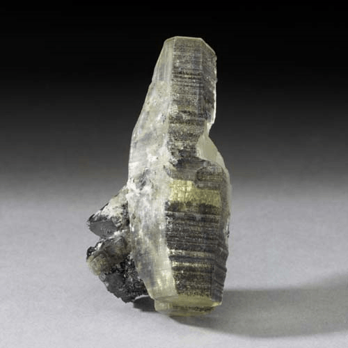

Sturmanite - Ca6Fe3+2(SO4)2.5[B(OH)4](OH)12·25H2O
Sulfates


Habit: Bright yellow to amber. Dipyramidal tabular to elongated hexagonal crystals; may be stacked in parallel aggregates. Greasy luster on fracture faces; transparent to translucent. Yellow white streak.
Environment: An uncommon secondary mineral in cavities in metamorphosed bedded manganese deposits.
Etymology: Named for B. Darko Sturman (b. 1937), a mineralogist at the Royal Ontario Museum, Toronto.